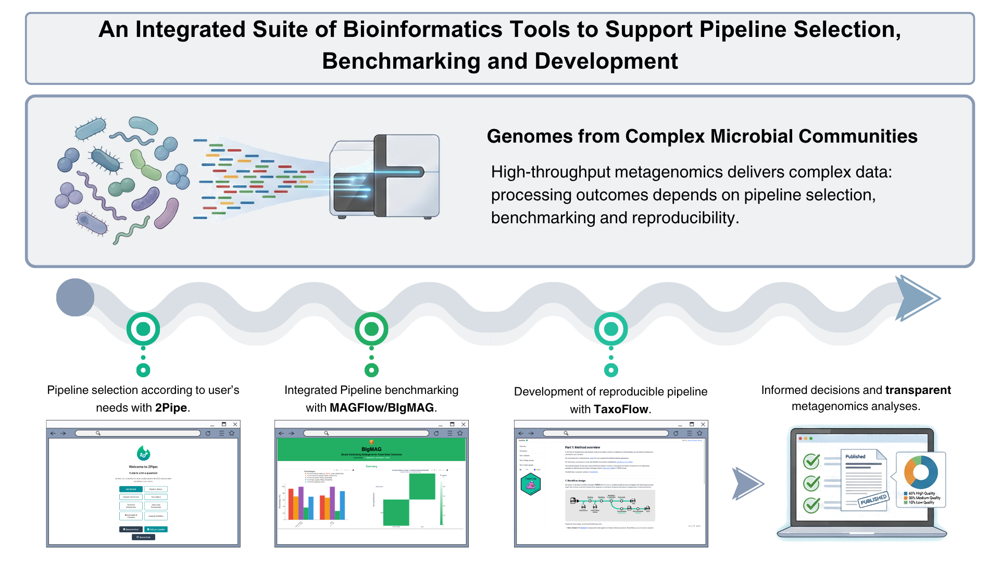
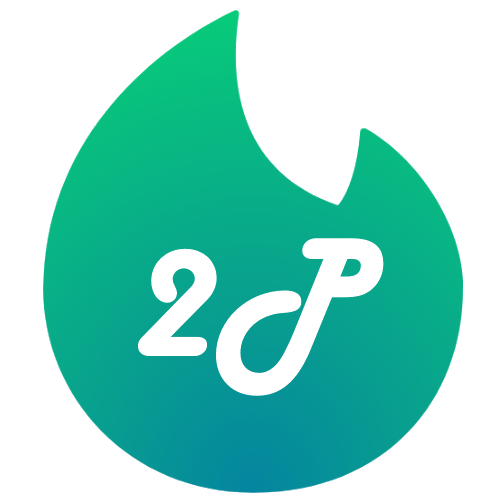
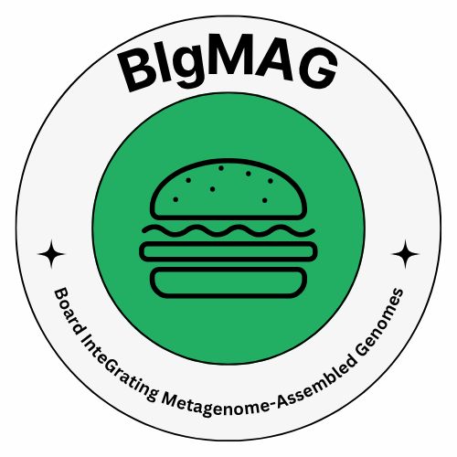
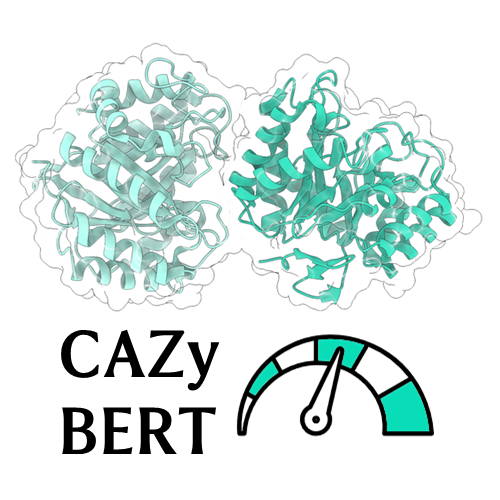

Decide
Answer a guided questionnaire and let 2Pipe match you with the most suitable MAG reconstruction pipeline from its curated catalogue.
A curated set of open-source applications that guide you through metagenomics at every stage — choosing the right pipeline, benchmarking MAG quality, visualizing results, annotating with deep learning, and building your own reproducible workflows.
The tools are designed to work hand-in-hand across the entire MAG workflow. Start with a decision, run and evaluate a pipeline, explore the results, and annotate what homology-based methods cannot see.
Answer a guided questionnaire and let 2Pipe match you with the most suitable MAG reconstruction pipeline from its curated catalogue.
MAGFlow measures genome quality and taxonomy at scale; BIgMAG turns those results into an explorable, interactive dashboard.
CAZyBERT extends CAZyme annotation beyond homology, using deep learning to classify sequences invisible to reference-based tools.
When no pipeline fits your constraints, TaxoFlow teaches you to build reproducible, scalable pipelines with Nextflow following nf-core best practices.

Each application is open source, documented, and ready to use — click through to access, explore or cite them.

It starts with a question
An interactive decision-support web app that matches you with the most suitable MAG reconstruction pipeline. It presents an overview of more than 40 pipelines and lets you evaluate tool combinations through a guided questionnaire, a pipeline gallery, workflow diagrams, and technical comparison tables.
Quality & taxonomy, at scale
A reproducible Nextflow (DSL2) pipeline that measures the quality of your MAGs with multiple tools and assigns taxonomy, generating the input file for BIgMAG. Built on nf-core community standards, it scales from a laptop to HPC and the cloud.

Board InteGrating Metagenome-Assembled Genomes
An interactive plotly Dash dashboard to explore metagenome quality metrics and taxonomical annotations from several tools at once. Works directly with the file generated by MAGFlow or nf-core/mag, and can be exported as a standalone HTML report.

Deep learning for CAZyme annotation
A fine-tuned protein language model (ProteinBERT) that classifies sequences into 30 lignocellulose-degrading CAZy families. Upload a FASTA file and receive family predictions with confidence values and distribution plots.
Bins / MAGs → quality & taxonomy
Interactive dashboard & reports
MAGFlow outputs a single final_df.tsv file that renders directly in BIgMAG — and BIgMAG is also compatible with output from nf-core/mag.
Hands-on courses and tutorials built to accompany the tools — from your very first Nextflow pipeline to complete metagenomics analyses and Python for bioinformatics.
Build your own taxonomic profiling pipeline
A step-by-step, self-paced tutorial to wrap a validated metagenomics taxonomic profiling protocol with Nextflow: host removal, Kraken2/Bracken annotation, Bayesian abundance re-estimation and reporting — modular, containerized and FAIR.
Build smarter, faster, reproducible pipelines
A full SIB course that takes you from workflow basics to fully modular Nextflow pipelines: orchestration, modularity, containers, and running on different environments — with lectures, exercises, polls and group work.
A 4-day hands-on workshop
A complete workshop covering quality control of short and long reads, targeted amplicon analysis with DADA2 and Phyloseq, reference-based classification with Kraken2/Bracken and Krona/Pavian, and MAG analysis with BIgMAG and friends.
5 sequential hands-on notebooks
A workshop that takes you from querying public databases (UniProt, SRA) and parsing sequence files, through an RNA-seq pipeline, to building interactive Plotly Dash apps and consolidating everything in a mini research project.
Peer-reviewed articles and preprints behind the tools and their training material. All open access.
Yepes-García J, Falquet L. mSystems 2026, 11(2):e00844-25.
Yepes-García J, Falquet L. F1000Research 2024, 13:640.
Yepes-García J, Falquet L. Gigabyte 2025. Preprint: 10.20944/preprints202512.1989.v2.
Yepes-García J, Falquet L. Preprints 2025, doi: 10.20944/preprints202506.0703.v2.
Yepes-García J, Falquet L. EMBnet.journal 2024, 30:e1063.
The tools and training material in this ecosystem are developed by Jeferyd Yepes-García at the Falquet group (BUGFri), University of Fribourg, in collaboration with Laurent Falquet, within the Swiss Institute of Bioinformatics (SIB). They are released open source for the benefit of the microbial genomics community.
Development was supported by the Federal Commission for Scholarships for Foreign Students (FCS), through the program Swiss Government Excellence Scholarships.